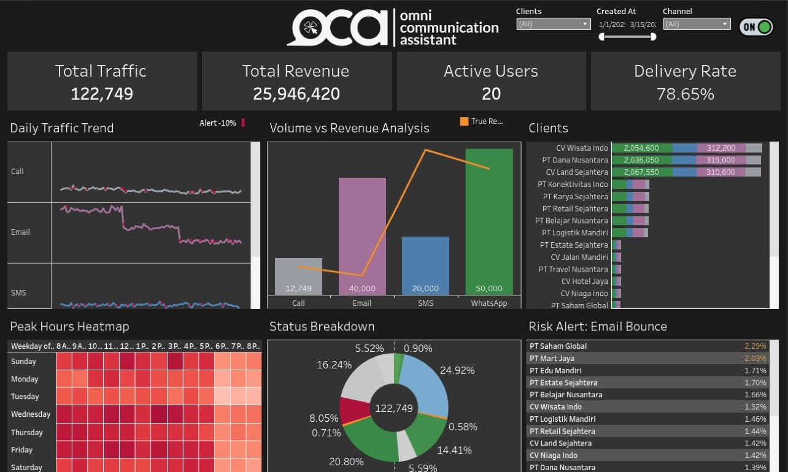

Python · Tableau · Q1 2024
OCA Blast — Operational Risk & Revenue Analysis
Audited a Rp25.9M communication portfolio, detected 38 SLA-threatening traffic drops, and designed an early-warning framework for delivery and bounce risk.
Read the analysis
Challenge
Undocumented traffic drops threatened client SLAs, while enterprise bounce rates risked Amazon Pinpoint IP blacklisting. Revenue concentration added another layer of vulnerability.
Approach
Cleaned and consolidated 122,749 valid transactions across WhatsApp, Email, SMS, and Voice Call, then audited delivery status, billing logic, and daily channel health.
Outcome
Delivered a six-month roadmap covering an early-warning system, high-bounce database cleansing, and repositioning SMS as a premium OTP channel.